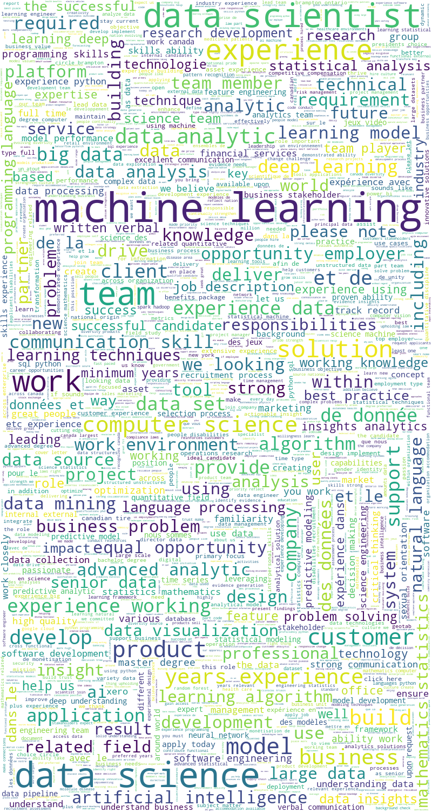
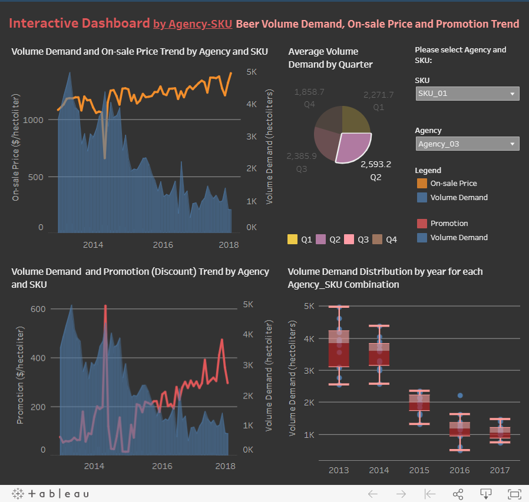
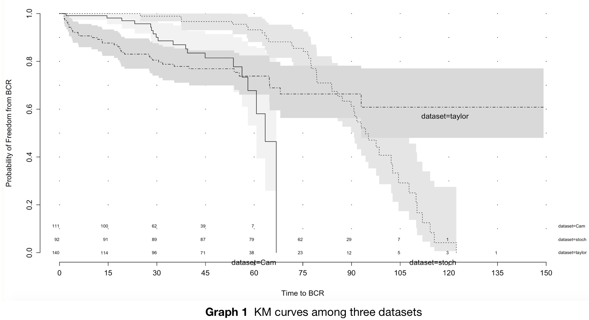
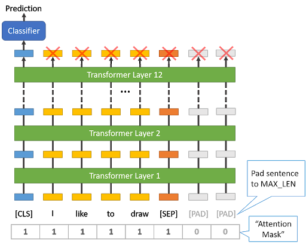

Project Highlights:
- Scraped job listings for 3 target positions from Glassdoor for a one-month period using selenium in Python
- Cleaned, Visualized and analyzed job listing data in a variety of ways using matplotlib, seaborn, wordcloud, etc.
- Built salary prediction models for various positions in data analysis area in Canada using Multivariate Linear, Lasso, Random Forest and SVM
- Fine-tuned Lasso, and Random Forest and SVM using GridsearchCV to achieve the best model (MAE ~ $16k)
- Deployed SVM model as a client-facing salary prediction tool on a website using Flask and Heroku

Project Highlights:
- Predicted monthly volume demand(hectoliters) for 350 Agency-SKU combination beer products simultaneously based on not only their own historical data but also other impactful features such as price and promotions using DeepAR in SageMaker AWS
- Trained and fine-tuned the DeepAR models using auto-tuning job, a built-in function in Sagemaker, and obtained test error(RMSE)=760
- Deployed the model as an endpoint and invoked it using API Gateway and AWS Lambda, so clients can access it for forecast on https://wol03vnof2.execute-api.us-east-2.amazonaws.com/beta (deleted to stop billing)
- Forecasted with a cold start: making predictions for unseen Agency-SKU combinations

Project Highlights:
- Computed Patient Baseline Characteristics table and Kaplan-Meier Curve graphs regarding 3 locations for prostate cancer patients
- Proved probabilities of freedom from BCR among three locations were significantly different after stratification by conducting Stratified Logrank Test
- built a AIC Stepwise Cox’s proportional hazards regression model with imputation and interaction terms, obtaining which demographic factors and genes have effects on survival
- Found which factors and genes have greater effects on survival using Random Survival Forest method

Project Highlights:
I built a multi-class classifier using BERT from Transformers that can identify common medical symptoms based on descriptive text. For example, the model can predict the medical intent is "Neck pain" after parsing the text message "There is a tingling sensation in my neck." It can be applied to services such as medical chatbot.
As for the model building process, I built the classifier with transfer learning from pre-trained BERT model, which was already trained on large corpus. For our specific task, the pre-trained BERT model was added an layer on top for classifying descriptive text to 25 intents (categories). When training started, I fine-tuned the entire pre-trained BERT model and the additional untrained classification layer. After 4 epochs of fine-tuning the model on thousands of text messages with a good selection of hyperparameters, I obtained 99.40% accuracy in the test set.